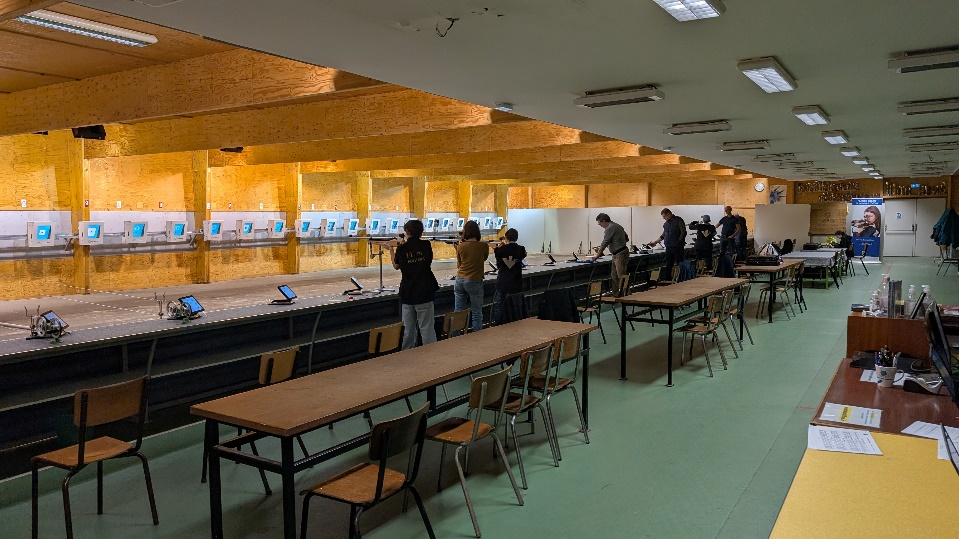

Nos stands
39, route de la cassette – 86000 POITIERS
Tir à l'air comprimé
- 10 mètres : Tir à la carabine et pistolet sur 26 cibles électroniques pour les tirs de "précision" et "standard", mais aussi un pas de tir dédié au tir de "vitesse".
- Ecole de Tir pour les 8/12 ans.
- Prêt d'armes aux tireurs licenciés.
Lieu-dit "Braille-Oueille" – 86170 CISSÉ
Tir aux armes à feu

- 25 mètres : armes de poing calibres autorisés par la FFTIR, 2 pas de tir de 10 postes

- 50 mètres : armes longues 22LR, 8 postes de tir avec rameneurs
- 50 mètres : poudre noire, 1 poste
- 50 mètres : gongs 25/50mètres 22LR, 1 poste

- 100/200/300 mètres : 6 postes TLD armes longues calibres autorisés par la FFTIR (armes de chasse interdites)